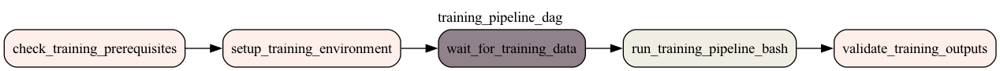

üöÄ DAG Visualizations
PySpark MLlib Customer Churn Prediction Pipeline
Training Pipeline DAG
üìã DAG Information
- Description: PySpark MLlib Model Training Pipeline
- Schedule: Daily at 1:00 AM (Asia/Colombo)
- Tasks: 5 tasks
- Task List: check_training_prerequisites, setup_training_environment, wait_for_training_data, run_training_pipeline_bash, validate_training_outputs
üñºÔ∏è PNG Visualization

Inference DAG
üìã DAG Information
- Description: PySpark MLlib Inference Pipeline - Real-time
- Schedule: Every minute
- Tasks: 5 tasks
- Task List: check_inference_prerequisites, setup_inference_environment, wait_for_model, run_inference_bash, validate_inference_outputs
üñºÔ∏è PNG Visualization
Data Pipeline DAG
üìã DAG Information
- Description: PySpark MLlib Data Preprocessing Pipeline
- Schedule: Daily at 1:00 AM (Asia/Colombo)
- Tasks: 4 tasks
- Task List: check_prerequisites, setup_environment, run_data_pipeline_bash, validate_outputs
üñºÔ∏è PNG Visualization
{kind=link}
{kind=link}
{kind=link}
{kind=link}
{kind=link}
{kind=link}